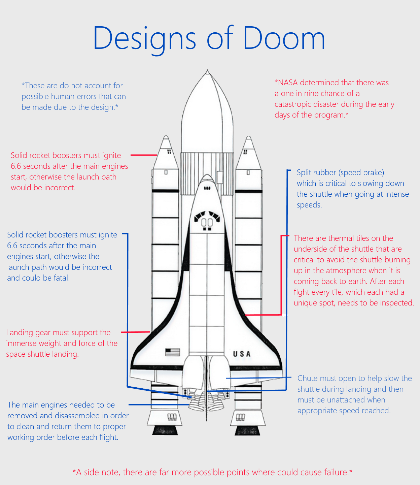

Design and Technology Depend on One Another.
My Extended Inquirty Paper (I think I might have forgotten to send this...)
Extended Inquiry Project.docx
My Annotated Bibliography
Annotated Bibliography.docx
My Extended Inquirty PowerPoint About Design and Tech
Design and Technology.pptx
A Pretty Neat Website That Tries To Show You How To See The Technology Behind Web Design
http://dmitrypustovit.com/design/
For the Space Fans Out There: A Poster Showing How Crtical Design is To Space

A Reflection
Despite the large amounts of technical trouble and just me doing silly stuff like forget to send an important word document, in my opinion this project turned out pretty good. I had a great time researching, mainly because it was the same thing I would do if I were just killing time. I would just surf the web and when I spotted something cool, like a NASA twitter post, I would wonder how I could use that in my Inquiry Project. Eventually, after spending enough time scattering the web, I found enough cool things to be able to make a project out of them. The most trouble I made in making my genre artifacts was determining just how to make them. I had this bundle of information and it could be used and displayed in many different ways. A part of me didn’t want to do a PowerPoint but it was nice was I could quickly show what I discovered from my major sources. Figuring out what source was useful was also a bit of a struggle, there are way too many blog articles that I just couldn’t use. Overall, I had fun but if I were to do it again I would pick a different theme.